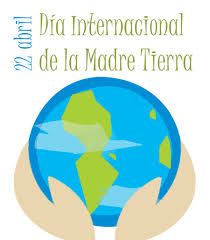
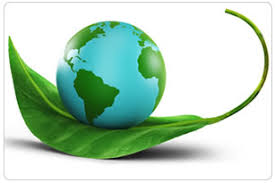
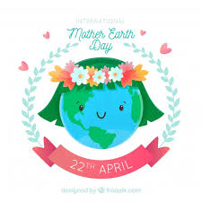
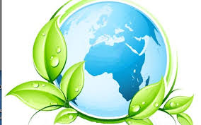
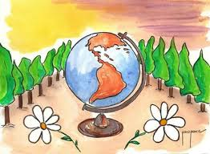

DIA MUNDIAL DE LA MADRE TIERRA
- 

- 
- 

- 
- 
Realizado por:
Samantha Larios Romero
4°H
Especialidad:
Programacion
Submodulo:
Desarrolla apliacaciones moviles
Docente:
Lic.Jose Antonio Gomez Hernandez
4°H
Programacion
Desarrolla apliacaciones moviles
Lic.Jose Antonio Gomez Hernandez
Celebramos el Dia internacional de la madre tierra para recordar que el planeta y sus ecosistemas que nos dan la vida y el sustento. Con este dia, asuminos, ademas, la responsabilidad colectiva, como nos recordaba la Declaracion de Rio de 1992, de fomentar esta armonia con la naturaleza y la madre tierra. Este dia nos brinda tambien la oportunidad de concienticiar a todos los habitantes del planeta acerca de los problemas que afectan a la tierra y a las diferentes formas de vida que en el se desarrollan.
Desde una primera convocatoria en la que congrego a 20 millones de personas en EE.UU en 1970, el Dia de la Tierra se ha convertido en una tradición mundial. Descubre cuando es, como empezo, como evoluciono y que debes hacer en un dia como este.
Las malas lenguas sostienen que el 22 de abril fue elegido como el Dia de la Tierra por el cumpleaños de Vladimir Lenin, el fundador de la Union Sovietica, que por una mera coincidencia se celebran el mismo día.
"El objetivo de Lenin era destruir la propiedad privada, meta que tambien comparten los ambientalistas”, publico en 2004 la web Capitalism Magazine.
Kathleen Rogers, presidenta de la organizacion del Dia de la Tierra en Washington y una de las primeras fundadoras en la organización del Día de la Tierra, se burla de la teoría.
Segun Kathleen, una de las principales razones para elegir aquel 22 de abril de 1970 como el primer Día de la Tierra porque ese año cayó en un miércoles, el día de la semana ideal para convocar una manifestación por el medio ambiente en todo el país.
"Todo funciono a la perfeccion, porque todo el mundo fue a la manifestación al terminar su jornada laboral” dijo Kathleen.
De hecho, mas de 20 millones de personas en los EE.UU. participaron en el primer Dia de la Tierra. A partir de entonces, este dia se celebra cada año con la una participación superior a los mil millones de personas en 180 países de todo el mundo, según los datos de Rogers.
Gente enfadada y un político frustrado
El Dia de la Tierra tiene sus raices en en 1960, la decada del activismo combativo: “El medioambiente empezaba a sufrir y la gente estaba enfadada”.
"En algunas ciudades del pais, no era raro que pudieras caminar por el centro el plena hora punta y no poder ver nada debido a la contaminacion”, dijo.
A pesar del desencanto popular, las cuestiones ecologicas no estaban presentes en la agenda de los politicos de americanos, cuestion que irritaba al senador por Wisconsin, Gaylord Nelson, cuyas campañas en favor del medio ambiente durante la decada de 1960 no surtieron efecto.
El primer día de la Tierra despego con entusiasmo"
En 1969, Nelson tuvo la idea de organizar una protesta en favor del medio ambiente tomando como modelo las manifestaciones en contra de la guerra de Vietnam.
"Fue algo frenetico. Nos llegaban telegramas, cartas y consultas telefonicas desde todas partes del pais", escribiria Nelson en un ensayo poco antes de morir en julio de 2005 a los 89 años.
"El pueblo estadounidense por fin tenia un foro para expresar su preocupacion sobre lo que estaba sucediendo con la tierra, los rios, los lagos y el aire, y lo hicieron de forma espectacular".
Nelson recluto al activista Denis Hayes para organizar aquel primer 22 de abril en1970. Hoy en dia se reconoce a Hayer como el precursor del movimiento ecologista moderno.
La Agencia de Proteccion Medioambiental de EE.UU nacio a finales de 1970, y desde entonces los esfuerzos para mejorar la calidad del aire y el agua fueron ganando terreno en el ámbito político.
"Fue verdaderamente increible lo que paso ", dijo Rogers. "Los muros simplemente se derrumbaron”.
El Dia de la Tierra evoluciona
La profesora adjunta del Instituto de Recursos Mundiales en Washington DC, Amy Cassara, analiza las tendencias globales del medio ambiente.
Amy señala que desde el comienzo del Dia de la Tierra, la conciencia ambiental ha pasado de ser una cuestion marginal a convertirse en toda una preocupacion general. "El 80 por ciento de los estadounidenses se describen como defensores del meidoambiente", dijo Cassara.
“Sin embargo, los problemas medioambientales de hoy van mas alla del aire sucio, el agua toxica, y los agujeros en la capa de ozono”.
El impacto sobre el medio ambiente ha ido cambiando hasta convertirse en algo abstracto y dificiles de explicar " dijo Cassara.
"A medida que nos industrializamos, nuestras cadenas de abastecimiento se van haciendo menos transparentes, por lo que las consecuencias de nuestras acciones sobre el medio ambiente son mas dificiles de entender”.
La plataforma del Dia de la Tierra quiere que este dia no se celebre solo durante una joranda, si no que el compromiso se extienda todo el año.
“Poetica y moralmente, plantar un arbol requiere atencion durante mucho tiempo, no se trata solo de plantarlo en el suelo” dijo Rogers.
Para ayudar a hacer la transicion hacia un mundo bajo en carbono, la organizacion colabora con cien mil escuelas de todo el mundo y forma parte de proyectos ambientales durante todo el año.
Cassara dijo que su organizacion emplea el Día de la Tierra para tratar de involucrar a los lideres politicos en el movimiento ecologista.
"El Dia de la Tierra no crea conciencia entre el publico de la misma manera que solia hacerlo. Pero todavia proporciona un punto de referencia para la reflexion entre aquellos que nos encontramos dentro de la comunidad del medio ambiente", dijo.
Que hacer durante el Dia de la Tierra?
Rogers anima a establecer un compromiso publico para realizar una accion relacionada con el medio ambiente a todos aquellas personas implicadas con el medio ambiente el proximo 22 de abril.
Comprometerse con las ideas promovidas desde la plataforma Dia de la Tierra supone educar a los amigos y familiares sobre el calentamiento global o comprar productos ecologicos como bombillas de bajo consumo.
El compromiso es la maxima de la iniciativa que se prolonga durante todo el año, "La Generación Verde", que nos ha llevado a una nueva convocatoria del Dia de la Tierra en 2018.
Segun Rogers, todos son parte de esta generacion que marca la transicion de la revolución industrial a la revolución verde.
"También se trata de generar energia y empleos verdes. ... Cada vez que mencionas “Generación Verde”, la gente sabe a que ideas te estas refiriendo, y eso es exactamente lo que queremos".
.jpg)
"Madre Tierra" es una expresión común utilizada para referirse al planeta Tierra en diversos países y regiones, lo que demuestra la interdependencia existente entre los seres humanos, las demás especies vivas y el planeta que todos habitamos. La Tierra y sus ecosistemas son nuestro hogar. Para alcanzar un justo equilibrio entre las necesidades económicas, sociales y ambientales de las generaciones presentes y futuras, es necesario promover la armonía con la naturaleza y el planeta. Celebramos el Día Internacional de la Madre Tierra para recordar que el planeta y sus ecosistemas nos dan la vida y el sustento. Con este día, asumimos, además, la responsabilidad colectiva, como nos recordaba la Declaración de Río de 1992, de fomentar esta armonía con la naturaleza y la Madre Tierra. Este día nos brinda también la oportunidad de concienciar a todos los habitantes del planeta acerca de los problemas que afectan a la Tierra y a las diferentes formas de vida que en él se desarrollan.
.jpg)
Se realizó en la sede de las Naciones Unidas en Nueva York, el 8° Diálogo Interactivo sobre Armonía con la Naturaleza, en ocasión de la conmemoración del Día Internacional de la Madre Tierra. Durante la jornada, se discutió sobre cómo los marcos legales y económicos de la Jurisprudencia de la Tierra impactan la implementación de patrones de producción y consumo sostenibles en Armonía con la Naturaleza. El Diálogo se realizó con el objetivo de inspirar a los ciudadanos y las sociedades a reconsiderar la relación que mantienen con la naturaleza, acorde a la meta 12.8 de los Objetivos de Desarrollo Sostenible con respecto a los patrones de consumo y producción sostenibles. Mejorar la base ética de la relación entre la especie humana y la Tierra en el contexto del desarrollo sostenible no es solo beneficioso, sino también necesario.
.jpg)
El paquete de medidas estratégicas diseñado por el quinteto de organizaciones ecologistas está compuesto por 17 demandas que abarcan medidas transversales que trascienden el medioambiente y van más allá con el fin de facilitar la transformación de todo el sistema. En concreto, tal y como anunciaron los responsables de estas ONG durante la presentación de Un programa por la Tierra. Demandas para una legislatura sostenible, lo que defienden con estas 17 propuestas es lograr que la «sostenibilidad del modelo económico, las políticas centradas en la justicia social y ambiental y las medidas para generar un nuevo modelo de producción y consumo, con generación de empleo ligado al cuidado y mejora ambiental» marquen el camino en la nueva etapa política. De forma resumida, estas son las 17 demandas:
.jpg)